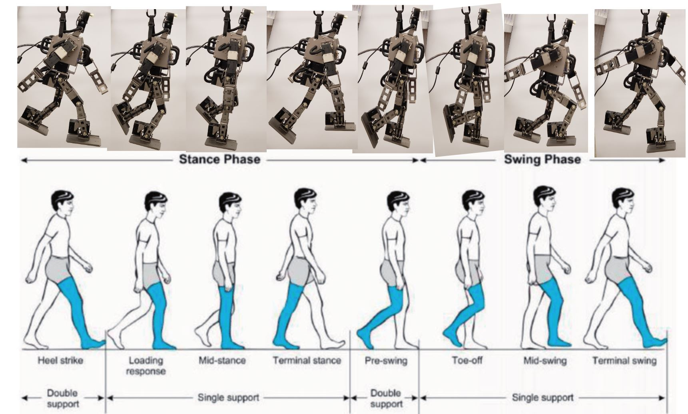
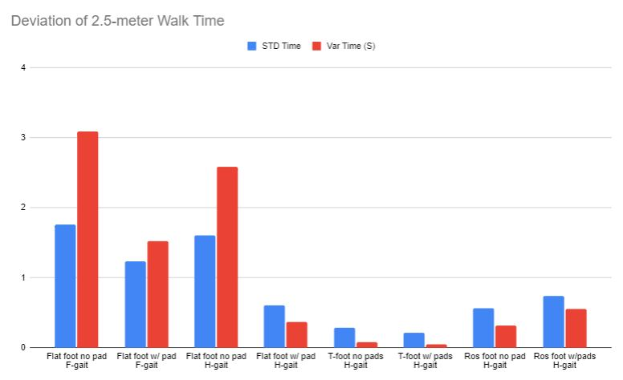
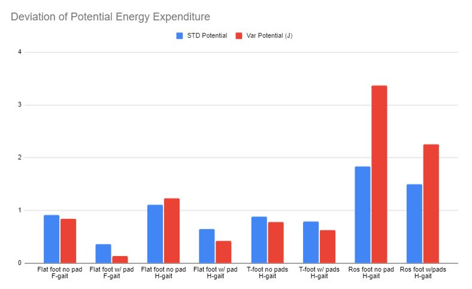
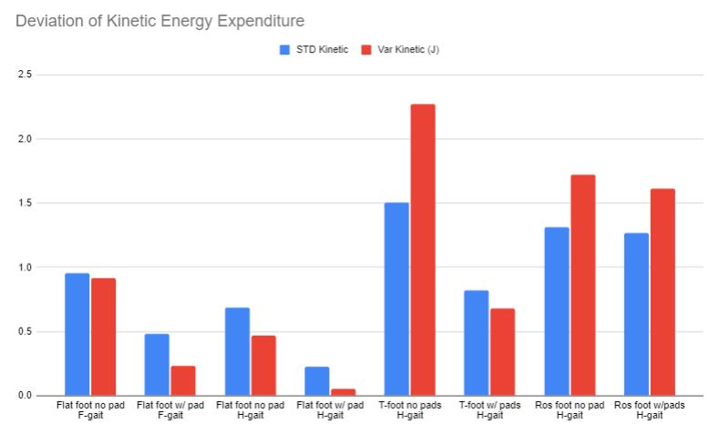
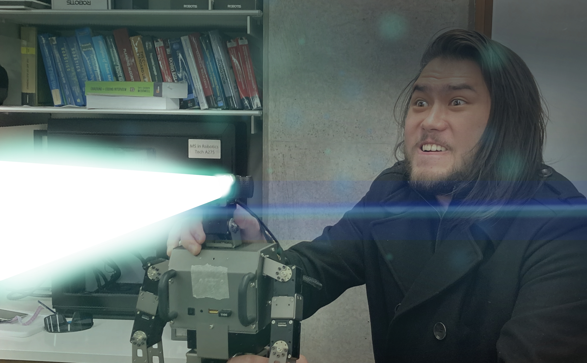

Robo-Toe

This project is a continuation of the Robotic Feet project that I worked on at the IHMC in 2021. In this project, I test new feet designs on a smaller-scale robot for cost efficiency and controllability.
Overview
I hypothesized that having an additional toe linkage would result in a more human-like walking gait and more efficient force transfer throughout locomotion. With toes, the robot would perform a more natural toe-off and heel-strike action, improving efficiency by reducing the energy for forward movement. The toe-off/heel-strike gait also improves efficiency by reducing the lateral movement range of the torso during locomotion, leading to more consistent force and power requirements. The addition of toes would also create a more efficient "roll-over-shape" which would improve the efficiency of dynamic walking.
The Robot

The Robotis OP3 robot used in this experiment is a development-level humanoid driven by 20 dynamixel electric servo motors. There are 6 motors in each leg, 3 motors in each arm, and 2 motors in the head. Although the major degrees of freedom are similar between the OP3 robot and the humanoid form, the joint positions on the leg are not anthropomorphic, as each linkage is a uniform length to fit each motor into the OP3 robot.
The robot's computer is an intel NUC that runs on Linux Mint and the robot's operating system is ROS Kinetic, running several Robotis ROS packages. The Northwestern University Robotics lab owns the robot and asked me to update the OP3 operating system and packages to the current versions they use in the lab.
This process involved updating the intel NUC OS to ubuntu 20.04 and the ROS version from Kinetic (2016) to Noetic (2020). The new ROS version also required me to update the Robotis OP3 packages in order to use the robot. Unfortunately, Robotis discontinued development for the OP3 robot in 2016, so I forked each ROS package that needed to be changed and made adjustments to the code to function with ROS Noetic. This involved making changes from python 2 to python 3 and OpenCV 3 to OpenCV 4.
There are links to the github repos of these packages at the bottom of this page.
I also needed to use an older version of Orocos Kinematics Dynamics library so that the balance controller would run without issues.
Design
Using the Onshape CAD software, I designed new feet to replace the original ones on the OP3. The new feet are designed with a passive toe linkage and a rigid roll-over-shape, completing the 4th linkage humans have for bipedal locomotion. The footprint dimensions of the feet were similar to the original flat feet that come with the Robotis-OP3 kit. Using the roll-over-shape formula of r = l/3, with r as the roll-over-shape radius and l as the leg length, The template of the roll-over-shape can be used to make feet with a variety of angles.

I created the roll-over-shape foot with a toe angle of 30 degrees. The toe linkage hinge for the T-foot was positioned for optimal force distribution at a 40 degree angle.
Walking Gaits
The Robotis packages come with a default walking gait designed specifically for Robotis robots, including the OP3. In addition, there are adjustable parameters that you can manipulate with a gui demo in the software. The default walking gait uses ZMP (zero moment point) for balance and locomotion. The walking parameters were limited to only use flat-footed walking as the OP3 was only intended to have flat feet, meaning that even with toed feet attached, the robot would be unable to utilize its mechanics. The OP3 ROS packages cannot add new walking controllers or new gaits easily. Therefore, in order to utilize and test the toe mechanism, I needed to create my own walking gait from scratch using hardcoded joint states. Using the human gait as a reference, I created a new gait cycle for the OP3 that included stance/swing phases, single and double support phases, and the eight stages of the human gait cycle: Heel-strike, loading response, mid-stance, terminal stance, pre-swing, toe-off, mid-swing, and terminal swing. The toe-off and knee straightening movement is used to propel the hips forward at the end of the double support phase.
The new gait I created nicely emulated the human gait and relies on the utilization of the toe mechanism. However, the hard coded nature of the toed, human-like gait led to balance issues. Without the proper development of a balanced human walking gait, the system would not be able to consistently function without falling to either side. To keep the human-like gait stable during locomotion without a proper walking controller, the testrig ("baby walker") was adjusted to support the robot on either side to prevent the robot from falling and/or veering off course. The walker did not directly support the robot's weight or influence forward movement. The robot's feet supported all of its weight and propelled it forward. The "baby walker" only helped stabilize the robot laterally and prevented it from falling over.
Metrics
To compare the efficiency between flat-footed walking and toed walking on the robot, several metrics should be established: Walking speed, number of steps taken, potential energy efficiency, kinetic energy efficiency, and power consumption.
Initially, power consumption was going to be collected by directly measuring the current being supplied to each motor. This would be done using the dynamixel 2.0 protocol to read the current from each motor in real time as the robot functions.
Unfortunately, the read/write protocol and the Robotis ROS packages did not leave any ability to simultaneously read currents and operate the robot with its predefined functions. I wrote ROS packages that attempted to read the motor currents in the background, however the robot would freeze up and loose control due to the way the Robotis software syncronized its read/write protocols.
Moving forward, tracking kinetic and potential energy efficiencies was the only way to gather energy metrics for the project.
The experiment would collect the amount of potential and kinetic energy expended during the 2.5-meter walk as well as the number of steps and time it took to complete the walk. The results would compare the measurements between walking with toes and the default control case with flat-footed walking.
Testing setup
To track the potential and kinetic energies, the real time location of the robot's enter of mass needed to be tracked and recorded. This was done using an Intel RealSense camera and Apriltags attached to the robot. An OP3 "baby walker" was made to mount the cameras, Apriltags, and catch the robot from falling to prevent damage to the robot.
Photos of testing setup


The RealSense camera is mounted in front of the robot to record the positions of 2 Apriltags. One Apriltag is located on the center of mass of the robot, and the other is attached to the testing rig structure as a reference position. This setup can track the robot's x and y position in real time.
Testing Parameters
There were several different feet configurations and gait configurations tested in this experiment.
The variety of feet include:
Default OP3 flat foot
Default OP3 flat foot with grip pads
T-foot (Toe foot)
T-foot with grip pad
ROS foot (roll-over-shape)
ROS foot with grip pad


The varienty of Gaits tested include:
Default OP3 walking
Tuned/improved OP3 walking
Davin's Humanoid walking gait
The control cases use the default OP3 walking gait and an improved OP3 walking gait using the default OP3 flat foot.
The control default OP3 walking gait performed the least efficiently in all metrics versus any other test case. This led to using the improved OP3 flat-footed gait as the primary control case for gait comparison.

Results
From The bar graph, you can see that the Improved Flat gait (F-gait) generally performed better than the Human-like gait (H-gait).
The number of steps the robot took is not necessarily an indicator of efficiency.
The time deviation is much smaller for the Human-like gait, showing that it has much more consistant and reliable speed.
The roll-over-shape foot has high deviation between trials for potential energy expenditure. This deviation is probably due to the foot shape occasionally propelling the robot mass upwards rather than forwards.
The Default flat foot seems to cause less deviation between trials for kinetic energy expenditure.
The results of the experiment show a few key differences between how the robot moves its center of mass for the different gaits.
The displacement in the x (horizontal) direction is significantly higher in the default OP3 gait than the human-like gait but is less significant in the improved OP3 flat-footed gait. This side-to-side swinging is used to keep the center of mass of the robot over the support foot and would alternate as each step is taken.
The x displacement is factored into the kinetic energy expenditure and shows that the flat-footed walking gait uses energy to move its center of mass from left to right.
The human-like gait has less consistent side-to-side movement because the center of mass is not always stable and falls forward in the swing phase to be caught by the heel strike. This is one of the defining characteristics of the biphasic forward propulsion of the center of gravity of the human walking gait.
Notice the high oscillation in the flat walking gait compared to the human-like gait.

Another characteristic I was focused on was hip height throughout the gait cycles. I was expecting to see more fluctuation in the hip height during the human-like gait however, the opposite was the case. y-displacement data showed that potential energy conservation was more efficient in the flat-footed gait. This is likely due to the flat-footed gait keeping knees bent and the hips level at all times, reducing the hip height movement and maintaining the system stability during locomotion. These data demonstrate that the flat improved OP3 gait has the greatest efficiency, least variance, and smallest distribution in potential energy conservation of all the test cases.
The Hip height oscillation has larger peak to peak amplitudes for the human-like gait in these trials.

The step length of the toed walking gait is significantly larger than the flat-footed walking gait as shown by the steps required to reach 2.5 meters. The human-like gait took an average of 11.6 steps to travel 2.5 meters, whereas the improved flat-footed gait took an average of 40.6 steps to travel 2.5 meters.

conclusion
The initial hypotheses made for toed feet and human-like gaits for bipedal walking were only partially supported by the data gathered. The improved flat-footed gait with flat feet showed to be the best performing and more consistent. There is shown to be high consistency in the data for the T-foot with human-like gait in energy efficiency. This is an important finding in that it suggests the potential for improvements in other metrics if a better-tuned human-like gait were to be developed. This experiment has shown that the utilization of toes in bipedal robots has the potential for improving energy efficiency and locomotion speed, compared to the standard flat-footed walking utilized by most other bipedal robots. The issues with implementing toes on robot bipeds, however, involves the additional degree of freedom, increasing the system's complexity, and requiring a more complex walking controller to keep the robot stable. As toed robots and more human-like gait patterns are developed further, increased efficiency and effectiveness are likely to result. Additional benefits might include human-like aesthetics in the appearance of the walking gait.
Future experiment improvements
To improve the detail of the experiment and conclusions, some future changes could be made. First, being able to accurately monitor the robot's power consumption while walking would give definitive insight into energy efficiency. Having a more extensive variety of feet to test, including changing the angles of the roll-over-shape feet and testing a variety of different spring tensions for the toed feet, would give additional insights into how the designs affect the way the robot walks. The most challenging improvement would involve creating an open-loop human-like walking control algorithm to keep the robot balanced while walking. However, due to the complex nature of humanoid walking and the current state and methods for bipedal walking control, creating such algorithms would involve undertaking very complex projects of their own.
GITHUB Repos
Here is a link to the OP3 testbed ROS package I made to collect and store the experiment data.
Here are the ROS packages I forked and changed to update the Robotis OP3 to ROS Noetic